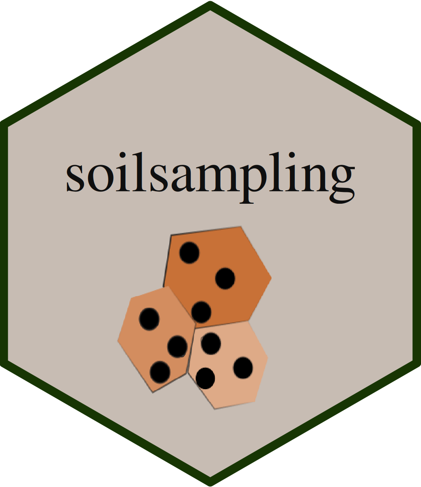

KL Sample Size Optimization
soilsampling Package Authors
2026-07-22
Source:vignettes/kl-sample-size.Rmd
kl-sample-size.RmdIntroduction
Conditioned Latin hypercube sampling (cLHS) is widely used to select environmentally representative sampling locations, but it leaves one question open: how many samples are enough? Too few samples fail to represent the environmental variability of the study area; too many waste field and laboratory resources.
Malone et al. (2019) proposed answering this using Kullback-Leibler (KL) divergence: run cLHS at a range of candidate sample sizes, measure how well each sample’s distribution matches the population’s distribution across all covariates, and pick the smallest sample size that reaches a target level of representativeness.
This vignette walks through ss_kl_size() and its
building blocks: ss_load_rasters(),
ss_kl_divergence(), ss_kl_optimize(), and
ss_kl_save_plots().
Theoretical Background
KL Divergence Between Population and Sample
For each numeric covariate, both the population and a candidate sample are binned into histograms over the same breaks. The KL divergence for that variable is:
where
is the sample’s density in bin
and
is the population’s density in the same bin.
ss_kl_divergence() averages this across all numeric
covariates, giving a single divergence score per sample: lower is better
(more representative).
From Divergence to Optimal Sample Size
ss_kl_optimize() repeats this at a sequence of sample
sizes (min_samples to max_samples, in
step_size increments), running n_replicates
independent cLHS draws at each size. The mean KL divergence per size is
then fit to an exponential decay curve:
The optimal sample size is the smallest for which the cumulative proportion of achievable improvement,
reaches probability_threshold (default
0.95) — i.e. the point of diminishing returns.
Basic Usage
ss_kl_size() accepts a raster path, an already-loaded
SpatRaster, or a plain population data frame. For this
vignette we build a small synthetic covariate stack so the example runs
quickly and needs no external files.
library(soilsampling)
library(terra)
set.seed(42)
nr <- 40
nc <- 40
# Synthetic terrain-like covariates with spatial structure + noise
r <- rast(nrows = nr, ncols = nc, xmin = 0, xmax = 100, ymin = 0, ymax = 100, nlyrs = 3)
names(r) <- c("dem", "slope", "ndvi")
xy <- xyFromCell(r, seq_len(ncell(r)))
values(r)[, "dem"] <- 100 + 20 * sin(xy[, 1] / 15) + rnorm(ncell(r), 0, 3)
#> Warning: [readValues] raster has no values
values(r)[, "slope"] <- abs(cos(xy[, 2] / 12) * 8 + rnorm(ncell(r), 0, 1))
values(r)[, "ndvi"] <- pmin(pmax(0.5 + 0.3 * cos(xy[, 1] / 20 + xy[, 2] / 25) +
rnorm(ncell(r), 0, 0.05), -1), 1)
r
#> class : SpatRaster
#> size : 40, 40, 3 (nrow, ncol, nlyr)
#> resolution : 2.5, 2.5 (x, y)
#> extent : 0, 100, 0, 100 (xmin, xmax, ymin, ymax)
#> coord. ref. :
#> source(s) : memory
#> names : dem, slope, ndvi
#> min values : 71.914355, 0.007235, 0.057239
#> max values : 127.422818, 10.770246, 0.958723Running the End-to-End Workflow
result <- ss_kl_size(
r,
min_samples = 10,
max_samples = 60,
step_size = 10,
n_replicates = 3,
n_bins = 15
)
result$optimal_sample_size
#> [1] 40
result$summary_results
#> # A tibble: 6 × 3
#> sample_size mean_kl sd_kl
#> <dbl> <dbl> <dbl>
#> 1 10 0.450 0.126
#> 2 20 0.131 0.0340
#> 3 30 0.0991 0.00468
#> 4 40 0.0583 0.0104
#> 5 50 0.0295 0.00221
#> 6 60 0.0268 0.00166result$summary_results shows the mean and standard
deviation of KL divergence at each tested sample size — you should see
it decrease as sample size grows, then flatten out.
Function Walkthrough
Loading Predictor Rasters
# Single multi-layer file
predictors <- ss_load_rasters("data/predictors.tif")
# Or a directory of single-layer .tif files
predictors <- ss_load_rasters("data/covariates/")Computing KL Divergence Directly
If you already have a population and a candidate sample as data frames, you can skip the raster/cLHS machinery entirely:
population <- as.data.frame(r, na.rm = TRUE)
candidate_sample <- population[sample(nrow(population), 30), ]
ss_kl_divergence(population, candidate_sample, n_bins = 15)
#> [1] 0.2398814Running the Optimizer on a Data Frame
ss_kl_optimize() is the engine behind
ss_kl_size(). Use it directly when you already have a
population data frame (e.g. from your own raster-to-data-frame
pipeline):
opt <- ss_kl_optimize(
population,
min_samples = 10,
max_samples = 60,
step_size = 10,
n_replicates = 3,
n_bins = 15
)
opt$optimal_sample_size
#> [1] 30Saving Plots Independently
ss_kl_size(..., output_dir = ...) writes CSVs and plots
together. To save just the plots from a result you already have in
memory (e.g. under a different naming scheme), use
ss_kl_save_plots():
ss_kl_save_plots(result, output_dir = "outputs", prefix = "clhs_kl")Choosing Parameters
-
step_size: smaller steps give a finer-grained curve but multiply the number of cLHS runs. Start coarse (e.g. 20-50 for a few hundred candidate samples) and refine around the optimum if needed. -
n_replicates: cLHS is stochastic, so each sample size needs multiple draws to estimate a stable mean KL divergence. 10 is a reasonable default for real analyses; this vignette uses 3 to keep runtime short. -
n_bins: number of histogram bins per covariate. Too few bins blur real differences; too many make the divergence estimate noisy with small samples. -
probability_threshold: how much of the achievable improvement you require before stopping.0.95(default) is a common choice; raise it if you can afford a larger sample, lower it if resources are tight.
Practical Workflow
library(soilsampling)
result <- ss_kl_size(
"data/predictors.tif",
min_samples = 10,
max_samples = 500,
step_size = 10,
n_replicates = 10,
probability_threshold = 0.95,
output_dir = "outputs"
)
result$optimal_sample_size
# outputs/ now contains:
# kl_raw_results.csv, kl_summary_results.csv, kl_fitted_curve.csv,
# kl_divergence_vs_sample_size.png, kl_cdf_threshold.pngWhen to Use KL Sample Size Optimization
✅ Use it when:
- You’re planning a cLHS design and need to justify the sample size
- You want a data-driven stopping point instead of a fixed round number
- Field/laboratory costs make oversampling expensive
❌ Don’t rely on it when:
- Your sample size is fixed by budget or logistics regardless of the analysis
- You have fewer than ~4 candidate sample sizes to test (the exponential fit needs more points to converge)
References
Malone, B.P., Minasny, B., and Brungard, C. (2019). Some methods to improve the utility of conditioned Latin hypercube sampling. PeerJ 7, e6451. DOI: 10.7717/peerj.6451
Minasny, B., and McBratney, A.B. (2006). A conditioned Latin hypercube method for sampling in the presence of ancillary information. Computers & Geosciences 32(9), 1378-1388. DOI: 10.1016/j.cageo.2005.12.009
Saurette, D.D., Heck, R.J., Gillespie, A.W., Berg, A.A., and Biswas, A. (2023). Divergence metrics for determining optimal training sample size in digital soil mapping. Geoderma 436, 116553. DOI: 10.1016/j.geoderma.2023.116553